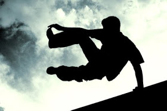
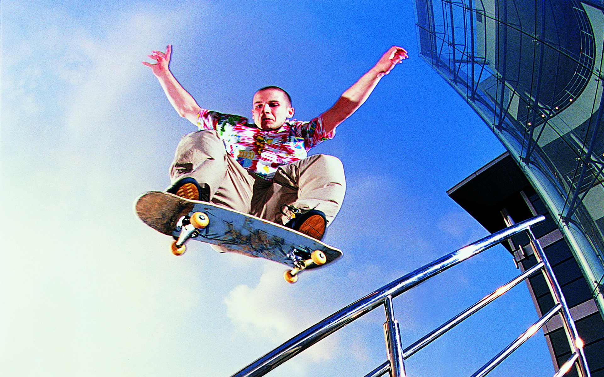
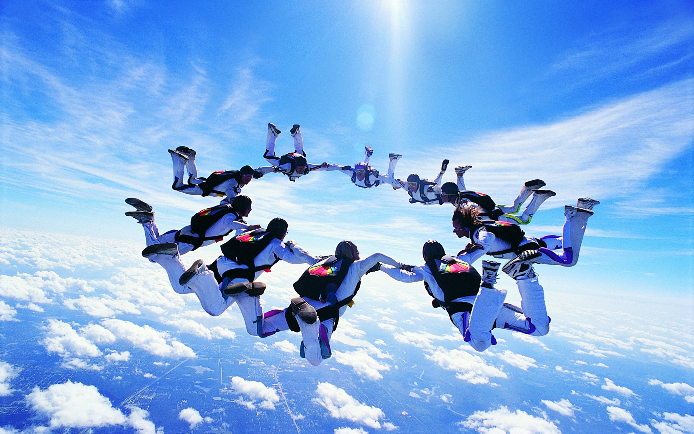
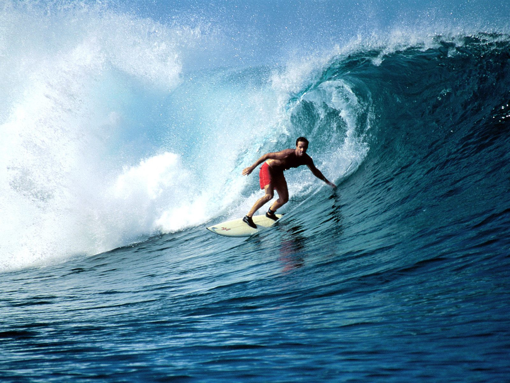

Deportes Extremos
Agunos De Los Mejores Deportes Extremos
PARKOUR
El deporte màs popular del mundo, en los ultimos años a sido el deporte extremo de mayor expansiòn en el mundo, jovenes y adultos de casi todas las edades lo practican.
Este deporte consiste en utilizar los elementosde los lugares para desplazarse de un lado a otro haciendo giros, saltos a gran velocidad.

SKATEBOARDING
Este deporte a creado toda una subcultura al rededor de su indumentaria y al elemento con que se practica, en este caso una patineta, normalmente la clàsica de 4 ruedas, aunque ya existen otras variantes.
PARACAIDISMO
Es uno de los deportesextremos que mas adrenalina despierta en muy poco tiempo, el hechoes; la caida libre, que en un principio fue desde globos aerostaticos y que ahora y desde hace mucho tiempo se hace desde los aviones o edificios.
Tambièn se puede lanzar desde lugares altos, como montañas o puentes.

ALA DELTA
El ala delta, es un deporte de altura, en este deporte se utiliza una aeronave diseñada para hacer trucos enel aire a gran altura, tiene forma aerodinamica de bumeran y para lanzarse normalmente se buscan sitios muy altos, como simas de montañas o barrancos.

SURF
El deporte extremo rey en las playas, para practicarlo solo se requiere una tabla especialmente diseñada para el Surf. Este deporte a alcanzado desde hace ya algun tiempo una gran aceptacion entre los adictos al peligro que asisten a las playas en busca de cazar las olas mas grandes del mundo, el lema aqui es: "Entre màs grande, mejor".
